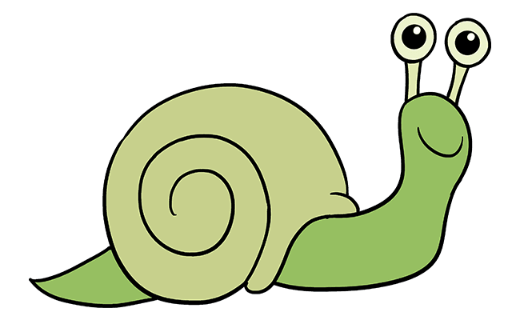

Top 42 Reasons That Any Attractive And Desirable Person Needs A Pet Snail This Upcoming Summer


Yes, you read that title right: summer snails are the HOTTEST trend to compliment your beach bod while you sip your piña colada in the beaches of Cancún! You might recognize snails as the useless, disgusting critters of the grime, but an innovative research team at the Southern Hoover Anglican Missionary have made groundbreaking research on why snails are the new craze.
In an experiment, the team observed that snails serve the vital role of maintaining their chiralnarcassistic vaccvironments (wow!), recycling the energy of dilapidated organ systems back into the environment (ewww!), and providing for new life over countless millennia (#throwback thursday am I right?!). Evidently, these 100% legitimate scientific explanations illustrate the importance of snails to the ecosystem.
If you are like us at ChakraThought, we know what you must be thinking: How can we ever hope to feel as important, significant, and necessary as a snail?! Fret not dear reader, because this AWESOME list is guaranteed to transform you from a lingering laggard to the most sizzling slug straggler on your feed!
Reason #1: Confidence!

Live snails make the perfect accessory to your summer wardrobe: if you can’t quite bury your harrowing insecurities, remember that no one can be insecure if everyone is insecure! Your snail-cessories are guaranteed to convince the entire world that you’re aligned with your inner snail, especially if you post photos wearing them on all of your social media constantly. And I mean– come on, what’s even like, the POINT of a snail pet if you don’t show it off 24/7? Snails are an awesome reminder to that ONE annoying coworker that they’ll never be quite as epic as you!
Reason #2: Everyone Else Is Doing It!

If we haven’t convinced you yet, just remember that all of your cooler friends are already “dripped out” with snails! Just 12 hours ago, Dwayne “The Rock” Johnson himself was caught with the most perfect pair of snails. If a celebrity is doing it, it's basically 100% proven that you need to be doing it as well (Chakra-verified stat).
Reason #42: They Fill The Void In Your Life!

Still not convinced? Check out this review from a top Chakra user
RealUser1083102: "after incessant advertisements and posts from my friends with their pet snails, i knew i was incomplete without my own. now, i can’t function without knowing i have my snail pets! thank you chakrathought "
Truly, one of the statements of the year captured in the wild. So what are you waiting for?!!?! Visit our Chakra Market Place to get your own pet snails at a 2-for-$500 deal (exclusive to Chakra Members) TODAY!!!